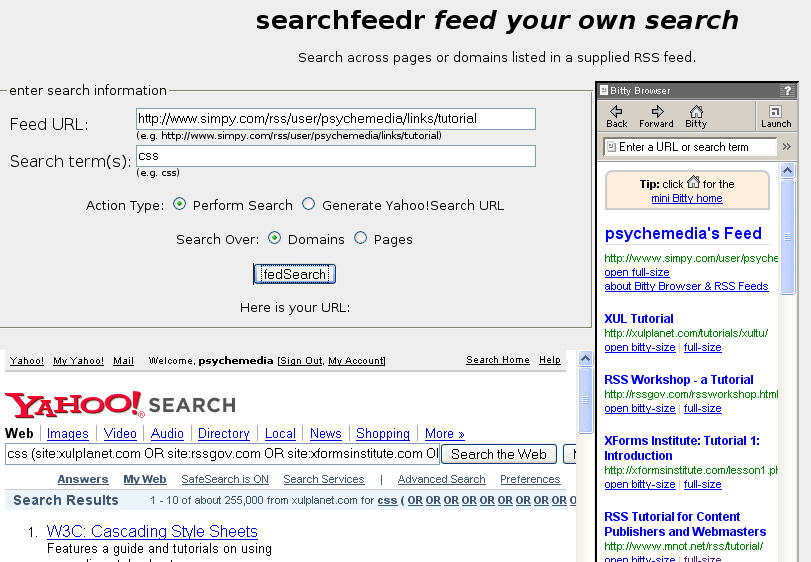

How about if you could easily, oh so easily, generate your own search engine from your resources you, or others whom you trust, have collected in the past? How about if you could actually feed your own search engine? How about using searchfeedr?
I just posted about Yahoo's latest response to Rollyo - their new Search Builder tool, which, like Rollyo, lets you define the sites you want to search over.
Google personalised search takes a slightly different tack and lets you search over the sites you've visited before (which the in-built flock history search takes one step futher, allowing you to search over your current browsing history).
Biassed as I am, I still think the approach demoed in deliSearch is more powerful, allowing you as it does to feed the domains (or pages) you want to search over dynamically into the search page.
However, deliSearch was not as powerful as it could have been, limiting searches to those fed by a delicious feed. Which is where searchfeedr comes in.
searchfeedr takes any web feed* and uses the links it contains to limit your search either by domain, or down to the page level.
*well, in principle it could...;-)
As well as displaying results within the search page, you can also generate a link to the limited search and view the pages that are being used to limit the search using an embedded Bittybrowser.

Try out searchfeedr now...
searchfeedr runs completely in the browser, though it does make use of several thrid party services: Yahoo for the search, Bitty Broser to view the limit feed, and XOXO Tools for the feed to JSON routine that pipes the feeds into the page in a useable way.
searchfeedr code can be easily embedded in your own page (that is on my broken timeline - please let me know if you can contribute effort;-), and easily used to create link driven searches (e.g. whereby the feed link is built in and all the user has to do is enter the search term they want).
Note also that several link driven searches could be built in to the same page, so for example clicking one link might search over one users tutorial tagged resources on delicious, whereas a sencond link may trigger a search over another user's bestpractice tagged resources on another social bookmarking service.
So far, I have tried searchfeedr with feeds from the delicious and simpy social bookmarking services. Depending on how well XOXO Tools work, you should be able to limit searchfeedr from a much wider range of feeds.
If searchfeedr takes off, I will look at guaranteeing QoS from standardised feeds, and also try and build a little slack in to the feed converter.
At the moment, there are six or seven extensions I have in mind for searchfeedr, but with holidays and other deadlines looming this probably won't appear even in very alpha form for several weeks.
That said, if you would like to know more - maybe even to offer a bit of coding effort;-) - please mail me...
Posted by ajh59 at August 8, 2006 10:37 PM